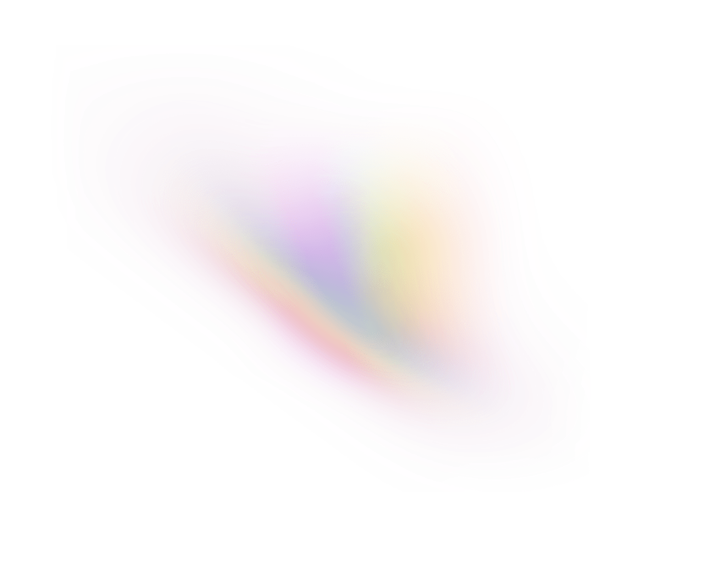
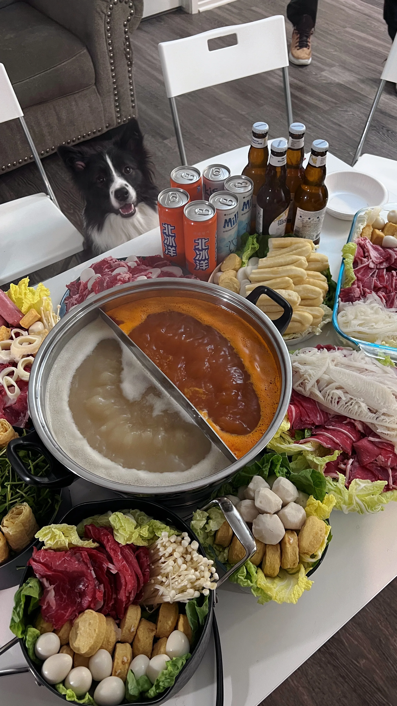
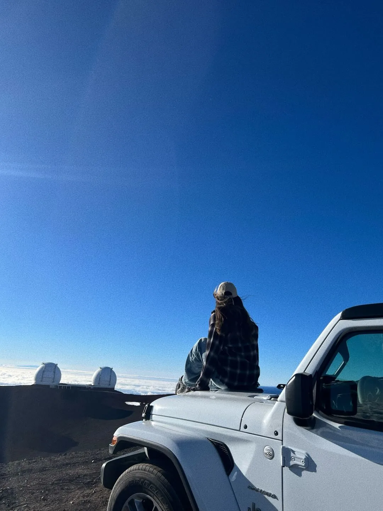

Bay Area, US
Hello,
I'm Yanice Yang
I’m a User Experience Designer based in the Bay Area. I enjoy solving digital problem through empathizing, researching, exploring and designing.

Thanks for stopping by. I am a designer passioned in exploring diverse fields and help users and business find the happier path to succeed. As a UX designer, I’ve come to deeply appreciate the role of design as a bridge between user needs and business goals. To me, UX is not just about creating visually appealing interfaces—it’s about solving real problems in a way that feels intuitive, inclusive, and meaningful to users. Before becoming a UX designer, I was once a fashion designer for 5 years, feel free to check my fashion work here. I also enjoy learning Math, Physics and other STEM fields.
I made 100k revenue in 2019 when I run a small business in Fashion field;)


I’m a passionate dog lover and proud owner of a beautiful black Shiba Inu named Xiao Kui (小葵). Since welcoming Xiao Kui into my life last year, I’ve discovered the joy and companionship that comes with being a dog parent. My love for dogs has not only enriched my personal life but also connected me with a wonderful community of fellow dog enthusiasts.
As a dog lover, I believe in the power of these loyal companions to bring people together, teach us patience and responsibility, and fill our lives with unconditional love.


I’m an avid skiing enthusiast who finds joy and exhilaration on the slopes. Whether it’s carving through fresh powder, tackling challenging runs, or simply enjoying the breathtaking mountain views, skiing is more than just a sport to me—it’s a way of life.
Meet me Vermont or Denver in snow season;)


In my kitchen, I enjoy experimenting with fresh ingredients, mastering classic recipes, and putting my own creative spin on dishes. Whether it’s steaming fluffy bao buns, perfecting the art of wok cooking, or hosting friends for a homemade hot pot feast, I find joy in every step of the process.Through cooking, I’ve not only honed my skills but also built a deeper appreciation for the stories and cultures behind each dish. For me, Chinese food is more than just nourishment—it’s a celebration of flavor, tradition, and togetherness.


I’m a nature enthusiast with an insatiable curiosity for the great outdoors. Whether it’s hiking through rugged trails, diving into the vibrant underwater world, or embarking on journeys to new destinations, I thrive on the thrill of exploration and the beauty of discovering the unknown.
These adventures have taught me resilience, mindfulness, and a deep appreciation for the planet’s natural wonders. Whether I’m scaling a mountain, diving beneath the waves, or wandering through a bustling city, I’m always eager to embrace new experiences and share my passion for exploration with others.